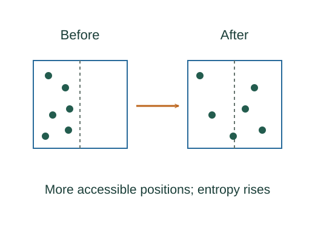
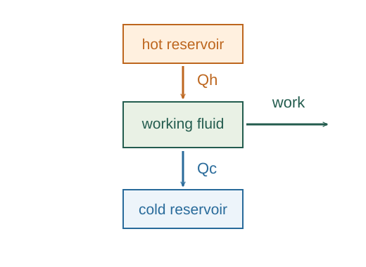

Why entropy uses /T
Entropy is a state function whose differences are defined through reversible heat transfer divided by absolute temperature. The second law supplies the path-independence needed for this definition.
What the symbols mean
S: thermodynamic entropy (J/K); : heat entering on a reversible reference path; T: absolute temperature along that path.
When this applies
Equilibrium endpoints and a reversible connecting path for the integral. The actual process need not be reversible.
From reversible heat to a property of the state
Heat depends on how a process is carried out. If entropy is to be a property of a state, we cannot simply give it the name “heat divided by temperature.” We first need to show that a particular integral has the same value for every reversible path between two equilibrium states.

Start with the reversible-cycle theorem
For any reversible cycle, Clausius’s equality says that the closed integral of /T is zero. This follows from the second law through reversible-engine arguments.
A closed path ends at its starting state. The theorem says that adding reversible heat divided by temperature around that complete path gives zero. The linked argument below establishes this from reversible engines and the second law.

Compare two routes between the same states
Choose two reversible routes from state A to state B. Follow the first route forward, then return along the second route in reverse. Together they make a reversible cycle, so the total integral is zero.
Reversing the second route changes the sign of its integral. The forward integral along the first route must therefore equal the forward integral along the second. This common value depends only on the endpoints, and we define it to be the entropy difference.
A constant temperature gives a special simplification
In general, temperature changes along the reversible reference path and must stay inside the integral. If that entire path is isothermal, temperature is constant and can be taken outside:
This familiar heat-over-temperature expression is consequently a special case. The reversible-path integral is the general definition of an entropy difference.
Separate entropy transfer from entropy production
For an actual closed-system process, entropy transfer with heat and internal entropy production must both be counted. Boundary temperature is used for the heat transfer.
An insulated process can have no heat transfer and still generate entropy internally. Insulation removes the heat-transfer term; it does not remove the possibility of irreversible mixing, friction, or free expansion.
Use a convenient reference path for an ideal gas
For fixed initial and final ideal-gas states, choose a reversible path that makes the calculation convenient. The first law separates the heat into a temperature contribution from internal-energy change and a volume contribution from reversible expansion work.
Divide those terms by temperature and integrate. With constant molar heat capacity, both integrations give logarithms:
Only the endpoint temperatures and volumes remain. The actual gas may have reached those endpoints irreversibly; the reversible route is a calculating path for the state difference.
A worked example
An insulated ideal gas freely expanding to twice its volume keeps the same temperature and has ΔS = nR ln 2 > 0, although actual Q = 0.
Derivation behind this calculation ↗A point to keep straight
ΔS = Q/T is not a general formula for arbitrary heat and processes. A reversible reference path is essential to the definition.
Check the assumptions and derivation ↗